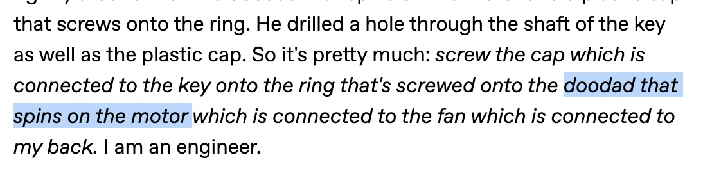
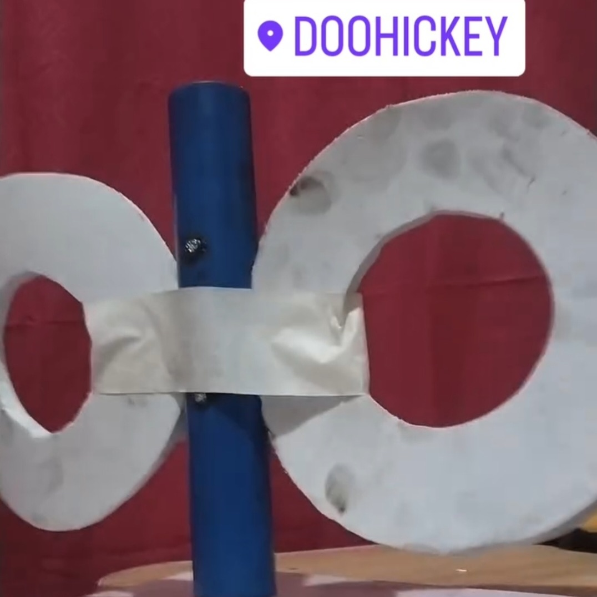
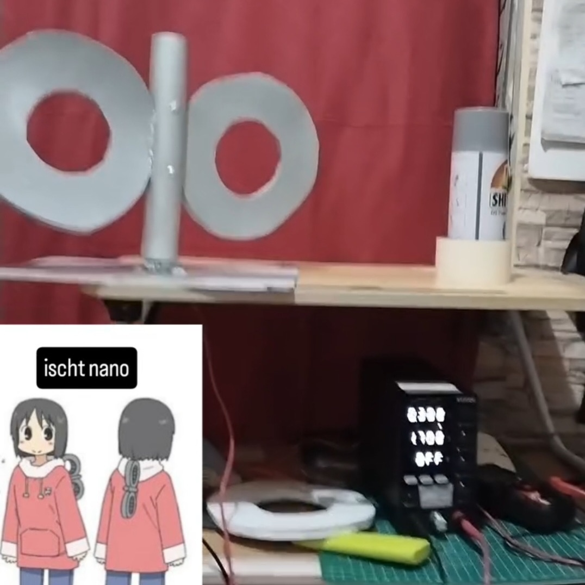
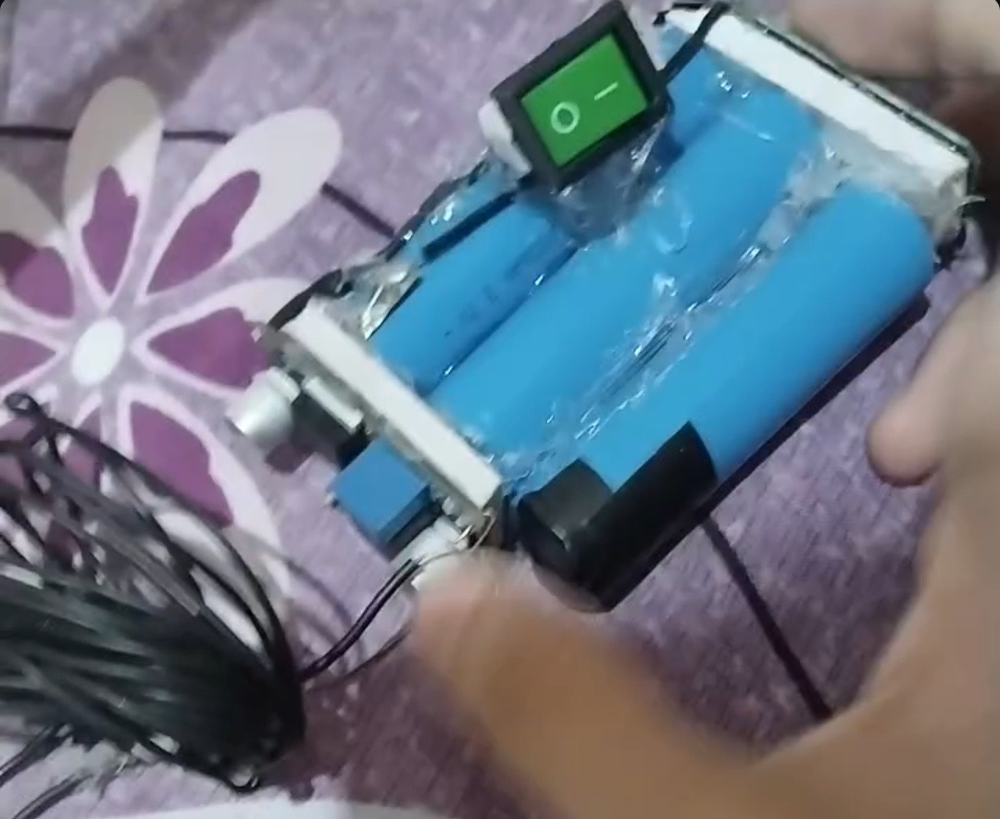
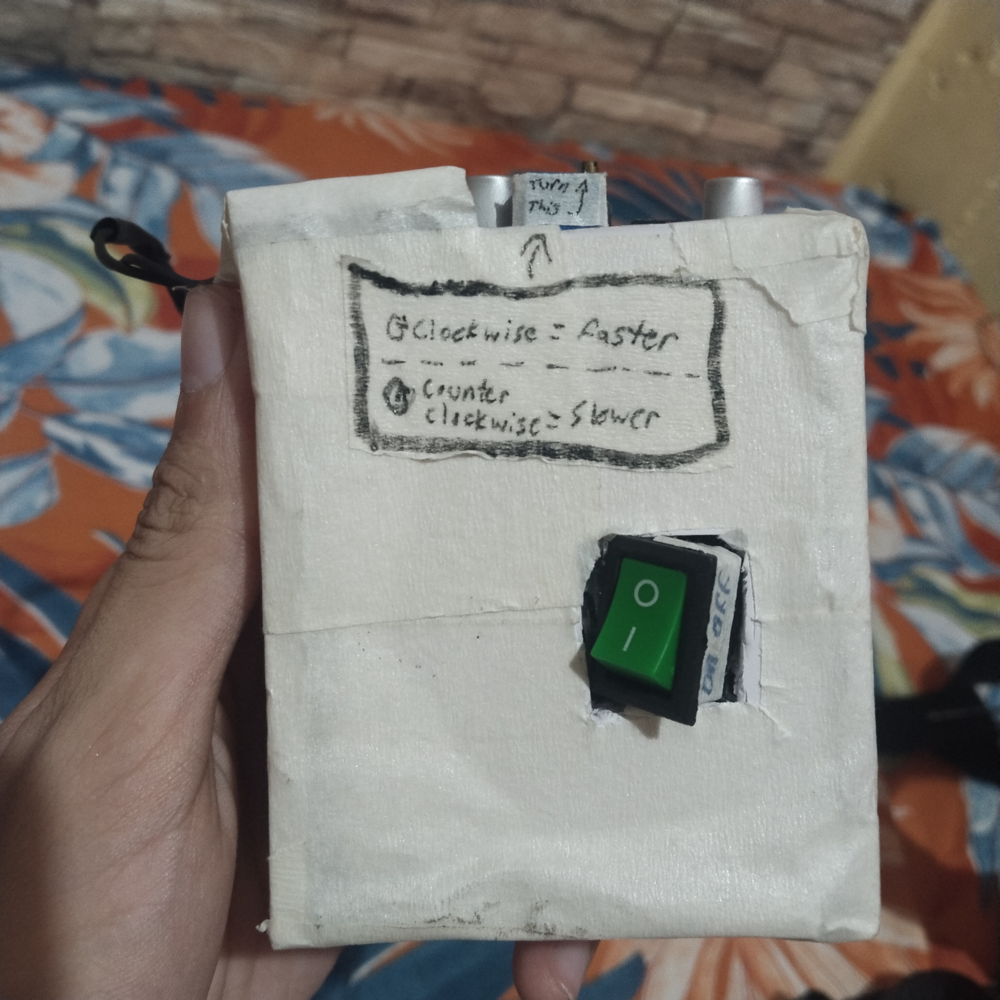

Nano Nano Nano !!

So, there's this cosplay event in the city I'm in, and I had the idea to make Nano Shinonome's spinning key from nichijou! Which I thought would be a pretty ez simple project, yaknow a motor and pipe and stuff!
It took me MONTHS (plus procrastinating, urhm) to actually get
it finished and done o_O... and I had the cosplay event coming up, so I ordered the parts fast, made a rough
sketch of what it was gonna be, then I got STUCK on what how the heck I was
gonna mount it exactly...
(and also because I didn't possess the tools to fabricate it, lowkeyly!)
Okauy I'm getting ahead of myself, at the start when I was researching materials and such for this, I found
this really cool
nano key someone already made like, 11 years ago! (or smth) So I used it as kind of a template for my key..
Although there was some confusion on how they did it, the steps didn't exactly read like technical
methodology bruhreurh...

(spent especially a bunch of time tryna figure out what the "doodad" was... 👀)

le rough schematic I made
Plan was:
-Thick vellumboard as baseplate
(because I could cut it with a cutter)
-Hose clamp with 2-4 L-brackets
(so I could fasten the motor to the base)
-Connect motor's D-shaft with a matching coupler
-Connect a metal rod to the coupler
-Drill thru the metal rod with 2 nails to the pvc
(like, drill thru the metal rod with 2 nails that
connect to the pvc pipe, so that it'll spin with
the motor, yaknow!)
-Drill holes in the pipe for the eva foam key!
-Then hook it up to a battery and make it wearable!
...then I procrastinated for months...
...up to the point where I MISSED
the cosplay
event I was building this for bruheh,, so 2027 I'll wear...

So after lots of procrastination, I told muh parents abt what I was making and my dad knew a mechanic
shop that could drill the stuff for me! so I brought my schematic and materials and told the mechanic
guy the plan... Paid him teh money and then went on to wait a couple days then... Drilled!
You can tell by the EVA foam dirt stains and blue pvc that I had lots to do to furnish up and make it look good and
clean and such, but I just gotta test that it works, and I hooked it up to my power supply and yerup, it spun!
But the thing is the mechanic guy just screwed the L-Brackets with a screw, and it was kinda long, so if I wanted to
wear this I needed a non-pointy screw or something NOT poking my back!
And, this is muh first mistake because I just borrowed a nail file and tried to file away this METAL screw, so I
spent like 5 hours hacking away at one screw, then another couple at the next, and after much metal shavings and
time trying to remove the sharp bit, wuh owh, the frkcicning VIBRATIONS of me
trying to remove the pointy bit damaged the baseplate it was screwed on (because the baseplate was just 1cm thick
vellum board, which LITCHERALLY just paper)
So I spent the next couple days trying to remake the entire base—disassembling it, removing the wires, ACTUALLY I
REMEMBER, AS I SOLDERED THE WIRES INTO THE DC MOTOR TERMINALS A TERMINAL BROKE.
So I put a glob of solder, and it worked again! So, goodie! When i disassembled I got a new vellum board and just
hose clamped the L-brackets to the motor, and then cut holes in the board for the brackets so I could put a nut
and bolt...
(nuts and bolts are actually CRAZY good, they should be used for EVERYTHING.)
le drilled key

painted,,,

I spray painted it with silver spray paint so it looks epix and kewl, and from the previous picture you
can see I used sum masking tape to get the little wind-up key circles into place, but here I used some
epoxy!
Two part epoxy to be exact!
And now that I got it looking well, urh, I needed to make it portable, and such, so I could wear it to
conventions or whatev, so luckily I already bought 3 18650 lithium ion batteries and a battery
management system for these three 18650 batteries!
I had to look up the "stall current" of the motor, which if I remember correctly is the max current it'll
draw when completely stopped moving, and some other motor stats, but I bought this DC motor from just
looking up "12v dc motor" online, so there isn't really a datasheet with its stats... So I just hope it
won't be blocked from rotating then the battery explodes or whatev...
I also thought of putting an LM2596 with a potentiometer so I can adjust the voltage and therefore the
spin speed! And I knowww I could've used PWM to slow the speed while getting max torque, but likr, I
don't *really* need taht yaknowhatimean...
ouu wires..

I wired up and soldered the connections from the BMS to the 3 li-ion
batteries in series
As I was wiring it up I was making all the connections neat and snug and
stuff, and I was adjusting the wires with my pliers but the pliers
sometimes completed a circuit and shorted with SPARKS! So that was kewl..
box.

I added a switch and an LM2596 so that I could, yaknow, turn it on and off
but also adjust the speed of the spinny key!
I made the enclosure out of remaining vellum board and masking tape... and
while it looks rly, "unprofessional," it has charm!
and urhm, that's about it!
I added some straps to make it wearable using some old bags
and nylon webbing, and done!
The only caveat is the square that's probably gonna be visible,
so I'm just gonna wear a baggy shirt over it poprolly...
May or may not update with a better baseplate so I won't have a
square imprint when I walk around!
okaey, buh bye!